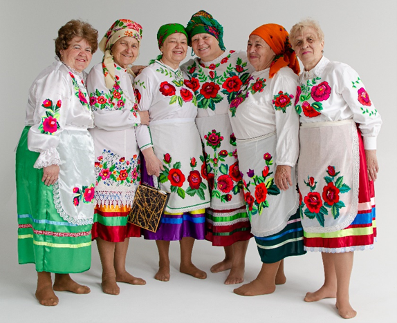
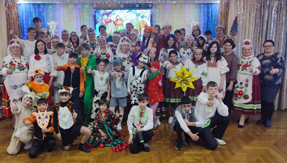
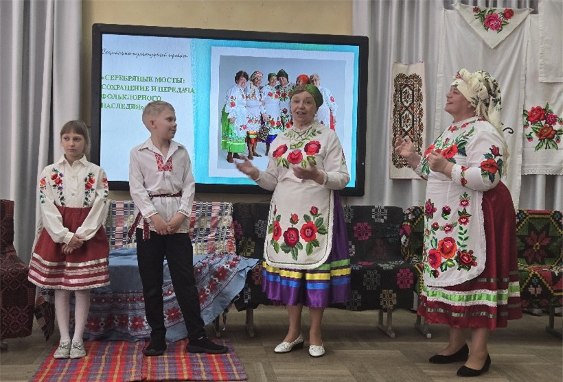
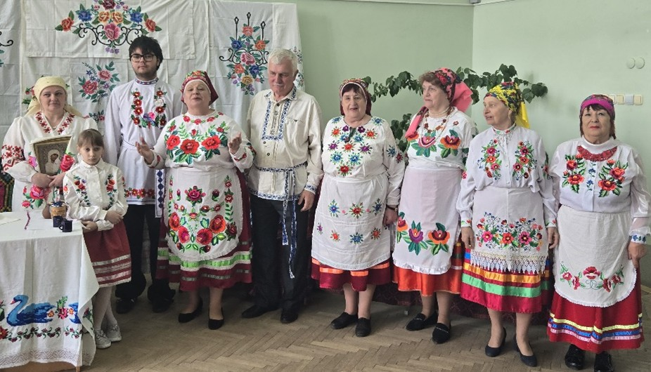
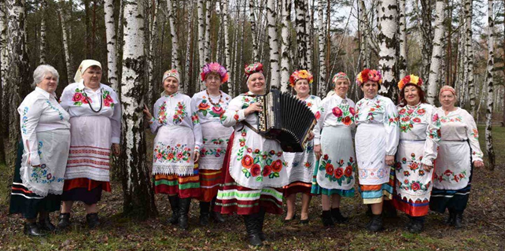

Активное долголетие
Постановлением Совета Министров от 3 декабря 2020г. № 693 утверждена Национальная стратегия Республики Беларусь «Активное долголетие – 2030».
Цель Национальной стратегии – создание условий для наиболее полной и эффективной реализации потенциала пожилых граждан, устойчивого повышения качества их жизни посредством системной адаптации государственных и общественных институтов к проблеме старения населения.
Среди основных принципов стратегии: гармонизация усилий государства, общества, семьи для наиболее полного и эффективного включения пожилых граждан во все сферы жизнедеятельности общества; соблюдение прав и законных интересов пожилых граждан во всех сферах жизнедеятельности общества, гендерное равенство; вовлеченность пожилых граждан и их участие в принятии решений на всех уровнях управления; содействие устойчивому экономическому развитию страны и др.
Стратегия направлена на решение 6 основных задач:
- обеспечение защиты прав и достоинства пожилых граждан, создание условий для их социальной включенности и всестороннего участия в жизни общества (задача 1);
- стимулирование более продолжительной трудовой жизни, формирование комфортного уровня дохода пожилых граждан (задача 2);
- обеспечение возможности для обучения в течение всей жизни, расширение доступа к получению образования и повышению квалификации (задача 3);
- создание условий для здоровой и безопасной жизни, активного долголетия (задача 4);
- развитие социального обслуживания для обеспечения достойного качества жизни пожилых граждан (задача 5);
- создание адаптированной к потребностям пожилых граждан инфраструктуры и среды жизнедеятельности (задача 6).
Документом определены показатели, по которым будет производиться оценка реализации стратегии, и перечень мероприятий по ее реализации.
В частности, в перечень мероприятий вошли:
- организация работы советов пожилых граждан, созданных при местных исполнительных и распорядительных органах;
- организация правового просвещения пожилых граждан;
- организация работы кружков, клубных формирований для пожилых граждан на базе организаций культуры, профсоюзных и ведомственных организаций, общественных объединений, реализация культурно-творческих, социокультурных и других проектов для пожилых граждан;
- организация экскурсионных поездок, разработка туристических маршрутов по Республике Беларусь, адаптированных для пожилых граждан;
- обеспечение наличия в коллективных договорах, тарифных и местных соглашениях норм, предусматривающих меры по противодействию возрастной дискриминации при приеме, сохранении, продвижении и увольнении работников;
- включение в коллективные договоры, тарифные и местные соглашения норм, предусматривающих меры социальной поддержки пенсионеров, ранее работавших в соответствующих организациях;
- организация обучающих курсов для пожилых граждан в учреждениях образования;
- организация занятий по повышению компьютерной и финансовой грамотности пожилых граждан, освоению социальных сетей, осуществлению платежей посредством сети Интернет;
- организация повышения квалификации для медицинских работников в части ведения геронтологических пациентов;
- разработка и реализация нормативного правового акта, регламентирующего оказание услуг медико-социальной помощи на дому;
- совершенствование законодательства, регулирующего вопросы социального обслуживания пожилых граждан;
- разработка, апробация и внедрение механизма определения нуждаемости в социальных услугах на основании оценки индивидуальной потребности. Законодательное закрепление механизма определения нуждаемости в социальных услугах на основании оценки индивидуальной потребности;
- развитие механизма государственного социального заказа;
- создание и развитие площадок для общения, культурного и спортивного досуга пожилых граждан.
Всего в перечень включено 55 мероприятий.
Проект гражданских инициатив "Серебряные мосты: сохранение и передача фольклорного наследия"

В декабре 2025 года учреждение «Территориальный центр социального обслуживания населения Мозырского района» приняло участие в открытом конкурсном отборе проектов гражданских инициатив для реализации в 2026 году социально-культурного проекта "Серебряные мосты: сохранение и передача фольклорного наследия".
Полесский фольклор — уникальное культурное наследие региона, включающее народные песни, сказки, обряды и традиции. В условиях глобализации и урбанизации оно под угрозой исчезновения. Важно сохранить эти культурные ценности для будущих поколений и укрепить национальную идентичность. Данный проект реализуется при отделении комплексной поддержки в кризисной ситуации и активного долголетия в условиях дневного пребывания. Граждане пожилого возраста, посещающие данное отделение, вовлечены в активную добровольческую деятельность с целью сохранения активного долголетия, межпоколенческого диалога, улучшения качества жизни как самих волонтеров, так и сообщества в целом.
«Серебряные» волонтеры с интересной культурной программой, включающей обряды, песни, частушки, прибаутки, посещают учреждения образования, детский дом, сельские советы, организации. Таким образом проект дает возможность не только сохранить уникальное наше культурное наследие, но и вдохнуть в него новую жизнь, сделав его частью повседневной реальности для многих людей.



